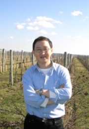

Prof. Ma’s research interests include the wireless network security protocols, data
security and the security design of mobile intelligent systems. He has published more than 200
papers, like IEEE Transactions on Information Forensics and Security, IEEE Transactions on
Dependable and Secure Computing, IEEE Transactions on Dependable and Secure Computing,
IEEE Transactions on Computers, IEEE INFOCOM. He has been continuously selected as a
highly cited scholar in 2019 and 2020. He has been funded by the National Natural Science
Foundation of China, National Key R&D Program of China in wireless network security,
unmanned system security and other aspects. Prof. Ma has been Authorized 78 technical
invention patents, formulated 3 ITU safety standards, 1 national standard. He is a Member of
IEEE.
Xiaohong Jiang
Future University Hakodate, Japan

Dr. Jiang’s research interests include computer communications networks, mainly
wireless networks and optical networks, interconnection networks for massive parallel computing
systems, routers/switches design for high performance networks, network coding for
wireless networks, VoIP over wireless networks, network security, VLSI/WSI systems, etc. He
has established the long last cooperation with top researchers in USA, Italy, Canada and China.
He has supervised 5 post doctoral fellows and 25 PhD students from Japan, China, Egypt,
Vietnam, Iran, etc. He has over 11 grants including Japan/USA NSF grant, Japan NSF grant and
Japan JST grant, and has published over 250 technical papers at premium international journals
and conferences, which include over 40 papers published in top IEEE journals and top IEEE
conferences, like IEEE/ACM Transactions on Networking, IEEE Journal of Selected Areas on
Communications, IEEE Transactions on Parallel and Distributed Systems, IEEE Transactions
on Communications, IEEE INFOCOM. Dr. Jiang was the winner of the Best Paper Award and
Outstanding Paper Award of IEEE HPCC 2014, IEEE WCNC 2012, IEEE WCNC 2008, IEEE ICC
2005-Optical Networking Symposium, and IEEE/IEICE HPSR 2002. He is a Senior Member of
IEEE, a Member of ACM and IEICE.
{% else %}
TBA
TBA
TBA
{% endif %}
Program Committee
{% if site.data.conference.technical_program_committees %}
{% for committee in site.data.conference.technical_program_committees %}